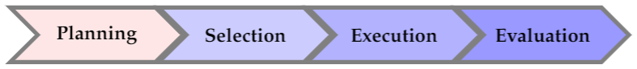

3 Planning a Sample
You are reading the work-in-progress first edition of Statistical Auditing with R. This chapter is currently a dumping ground of ideas, and it is incomplete.
One of the key considerations in audit sampling is determining the appropriate sample size to achieve a desired level of assurance or precision. This chapter will focus on three standard likelihoods commonly used in audit sampling: the hypergeometric likelihood, the binomial likelihood, and the Poisson likelihood.

In jfa, determining an appropriate sample size is achieved via the planning() function.
When you are using the Bayesian approach to audit sampling, it is not required to plan a certain sample size in advance (Derks et al., 2022). That is because in Bayesian inference, the posterior distribution after seeing each item is used as the prior distribution for the next item. That means that you can simply start sampling and monitor the evidence in the data over time. However, to get an idea of how many samples are required to achieve a certain amount of assurance, planning a sample using a Bayesian approach can still be good practice.
3.1 Required Information
First, planning a minimum sample requires knowledge of the conditions that lead to acceptance or rejection of the population (i.e., the sampling objectives). Typically, sampling objectives can be classified into one or both of the following:
- Hypothesis testing: The goal of the sample is to obtain evidence for or against the claim that the misstatement in the population is lower than a given value (i.e., the performance materiality).
- Estimation: The goal of the sample is to obtain an accurate estimate of the misstatement in the population (with a minimum precision).
Second, it is advised to specify the expected (or tolerable) misstatements in the sample. The expected misstatements are the misstatements that you allow in the sample, while still retaining the desired amount of assurance about the population. It is strongly recommended to set the value for the expected misstatements in the sample conservatively to minimize the chance of the observed misstatements in the sample exceeding the expected misstatements, which would imply that insufficient work has been done in the end.
Finally, next to determining the sampling objective(s) and the expected misstatements, it is important to determine the statistical distribution linking the sample outcomes to the population misstatement. This distribution is called the likelihood (i.e., poisson, binomial, or hypergeometric). All three aforementioned likelihoods are commonly used in an audit sampling context, however, poisson is the default likelihood in jfa because it is the most conservative of the three. In the subsections below, we elaborate on the three standard likelihoods for audit sampling and demonstrate how they can be used to obtain a minimum sample size.
3.2 The Hypergeometric Likelihood
Let’s consider how to use the hypergeometric likelihood to calculate the minimum sample size needed to achieve the desired level of assurance. The hypergeometric distribution is a discrete probability distribution that is commonly used to model the number of events occurring in a fixed number of trials when the population size is known. It assumes that samples are drawn from the population without replacement, and is therefore the likelihood that most closely resembles the audit practice. For our purpose, we can use the hypergeometric distribution as a likelihood to model the number of misstatements that are expected to be found in the sample.
The probability mass function (PMF) of the hypergeometric distribution is given by:
\[\begin{equation} p(X=k)=\frac{\binom{K}{k}\binom{N-K}{n-k}}{\binom{N}{n}}, \end{equation}\]
where \(k\) is the number of misstatements in the sample, \(n\) is the sample size, \(N\) is the population size and \(K\) is the total number of misstatements assumed in the population. The assumed misstatements \(K\) is a linear extrapolation of the assumed misstatement rate in the population \(\theta_{max}\) to the total population:
\[\begin{equation} K = \theta_{max} N. \end{equation}\]
3.2.1 Classical planning
In classical planning using the hypergeometric likelihood, the following statistical model is specified:
\[\begin{equation} k \sim \text{Hypergeometric}(n, N, K) \end{equation}\]
Given the performance materiality \(\theta_{max}\), we can solve for the minimum sample size \(n\) needed to achieve this assurance level. This sample size is dependent on the number of misstatements that the auditor expects, or tolerates, in the sample.
3.2.1.1 No Expected Misstatement
If the auditor does not expect any misstatements in the sample, they can set \(k = 0\), which consequently determines how the sample size can be calculated. For example, if we want to achieve an assurance level of 95% (\(\alpha = 0.05\)) for a performance materiality of \(\theta_{max} = 0.03\) in a population of \(N = 1000\) items, then the required sample size under the assumption of no expected misstatements in the sample is \(n = 94\).
plan <- planning(materiality = 0.03, expected = 0, conf.level = 0.95,
likelihood = "hypergeometric", N.units = 1000)
plan
#>
#> Classical Audit Sample Planning
#>
#> minimum sample size = 94
#> sample size obtained in 95 iterations via method 'hypergeometric'The planning() function has two additional arguments that are not shown in the call above: by and max. The argument by sets the increment between possible sample sizes for consideration. For example, by = 5 considers only samples of size 10, 20, 30, etc:
planning(materiality = 0.03, expected = 0, conf.level = 0.95,
likelihood = "hypergeometric", N.units = 1000, by = 10)
#>
#> Classical Audit Sample Planning
#>
#> minimum sample size = 100
#> sample size obtained in 11 iterations via method 'hypergeometric'The argument max sets the sample size at which the algorithm terminates. This can be used to avoid too many iterations of the algorithm at very low values of the performance materiality. For instance, max = 50 throws an error if more than 100 samples are required.
planning(materiality = 0.03, expected = 0, conf.level = 0.95,
likelihood = "hypergeometric", N.units = 1000, max = 50)
#> Error in planning(materiality = 0.03, expected = 0, conf.level = 0.95, : the sample size is larger than 'max'The sample size of 94 can be confirmed by checking that 94 is the minimum integer that results in less than 5% probability of finding 0 misstatements, given the assumption that the population misstatement is truly 3%. The dhyper() function calculates the probability of observing \(k\) missatements in a sample of \(n\) items given the assumed hypergeometric distribution with \(N\) items and \(K\) assumed misstatements in the population. By calculating this probability for \(n = 93\), we can show that this sample size is insufficient as the relevant probability is higher than the sampling risk \(\alpha\).
K <- ceiling(0.03 * 1000)
dhyper(x = 0, m = K, n = 1000 - K, k = 93) < 0.05
#> [1] FALSEHowever, for \(n = 94\) the relevant probability is lower than the sampling risk \(\alpha\) and thus the sample size is considered to be sufficient.
dhyper(x = 0, m = K, n = 1000 - K, k = 94) < 0.05
#> [1] TRUEWe can make this sample size visually intuitive by showing the hypergeometric(\(k\) | 94, 1000, 30) distribution and highlighting the probability for \(k = 0\). This probability is lower than the required sampling risk \(\alpha = 0.05\).
plot(plan)
3.2.1.2 Expected Misstatements
If the auditor expects misstatements in the sample, they can set \(k\) to any integer value, which consequently determines how the sample size can be calculated. As another example, if we want to achieve an assurance level of 95% (\(\alpha = 0.05\)) for a performance materiality of \(\theta_{max} = 0.03\) in a population of \(N = 1000\) items, then the required sample size under the assumption of one expected misstatement in the sample is \(n = 147\).
plan <- planning(materiality = 0.03, expected = 1, conf.level = 0.95,
likelihood = "hypergeometric", N.units = 1000)
plan
#>
#> Classical Audit Sample Planning
#>
#> minimum sample size = 147
#> sample size obtained in 146 iterations via method 'hypergeometric'Once again, the sample size of 147 can be confirmed by checking that 147 is the minimum integer that results in less than 5% probability of finding 0 or 1 misstatements, given the assumption that that the population misstatement is truly 3%. By calculating this probability for \(n = 146\), we can show that this sample size is insufficient as the relevant probability is higher than the sampling risk \(\alpha\).
sum(dhyper(x = 0:1, m = K, n = 1000 - K, k = 146)) < 0.05
#> [1] FALSEHowever, for \(n = 147\) the relevant probability is lower than the sampling risk \(\alpha\) and thus the sample size is considered to be sufficient.
sum(dhyper(x = 0:1, m = K, n = 1000 - K, k = 147)) < 0.05
#> [1] TRUELike before, we can make this sample size visually intuitive by showing the hypergeometric(\(k\) | 147, 1000, 30) distribution and highlighting the probabilities for \(k = 0\) and \(k = 1\). The sum of these probabilities is lower than the required sampling risk \(\alpha = 0.05\).
plot(plan)
3.2.2 Bayesian Planning
Performing Bayesian planning with the hypergeometric likelihood (Dyer & Pierce, 1993) requires that you specify a prior distribution for the total misstatements \(K\). Practically, this means that you should provide an input for the prior argument in the planning() function.
Setting prior = TRUE performs Bayesian planning using a default prior conjugate to the specified likelihood (i.e., a beta-binomial prior). Because this is a Bayesian analysis, the following statistical model is specified:
\[\begin{align} k &\sim \text{Hypergeometric}(n, N, K) \\ K &\sim \text{Beta-binomial}(N, \alpha, \beta) \end{align}\]
The beta-binomial prior distribution is the conjugate prior for to the hypergeometric likelihood (see this list of conjugate priors), which means that the posterior distribution of \(K\) can be determined analytically. For example, if the prior distribution for \(K\) is:
\[\begin{equation} K \sim \text{Beta-binomial}(N, \alpha, \beta) \,\,\,\,\,\,\,\,\,\, K = 0, \ldots, N \end{equation}\]
and the auditor has observed a sample of \(n\) items containing \(k\) misstatements, then the posterior distribution for \(K\) is:
\[\begin{equation} K \sim \text{Beta-binomial}(N - n, \alpha + k, \beta + k - n) \,\,\,\,\,\,\,\,\,\, K = k, k + 1, \ldots, N - n + k. \end{equation}\]
3.2.2.1 No Expected Misstatement
Planning for no expected misstatements in the sample can be done by setting the value for the expected argument to zero. If we want to achieve an assurance level of 95% (\(\alpha = 0.05\)) for a performance materiality of \(\theta_{max} = 0.1\) in a population of \(N = 20\) items, then the required sample size under the assumption of zero expected misstatements in the sample is \(n = 15\). The command below uses a default beta-binomial(\(N\), 1, 1) prior distribution to plan this sample, since planning() is given the hypergeometric likelihood.
plan <- planning(materiality = 0.1, expected = 0, conf.level = 0.95,
likelihood = "hypergeometric", N.units = 20,
prior = TRUE)The summary() function can be used to obatain relevant information about the planning.
summary(plan)
#>
#> Bayesian Audit Sample Planning Summary
#>
#> Options:
#> Confidence level: 0.95
#> Population size: 20
#> Materiality: 0.1
#> Hypotheses: H₀: Θ > 0.1 vs. H₁: Θ < 0.1
#> Expected: 0
#> Likelihood: hypergeometric
#> Prior distribution: beta-binomial(N = 20, α = 1, β = 1)
#>
#> Results:
#> Minimum sample size: 15
#> Tolerable errors: 0
#> Posterior distribution: beta-binomial(N = 5, α = 1, β = 16)
#> Expected most likely error: 0
#> Expected upper bound: 0.05
#> Expected precision: 0.05
#> Expected BF₁₀: 190You can inspect how the prior distribution compares to the expected posterior distribution by using the plot() function. The expected posterior distribution is the posterior distribution that would occur if you actually observed the planned sample containing the expected misstatements. Note that the posterior distribution is only defined in the range [\(k\); \(N - n + k\)], since a part of the population has already been seen.
plot(plan)
3.2.2.2 Expected Misstatements
Planning for expected misstatements in the sample can be done by setting the value for the expected argument to a different value than zero. For example, the command below calculates the minimum sample size to achieve an assurance level of 95% (\(\alpha = 0.05\)) for a performance materiality of \(\theta_{max} = 0.1\) in a population of \(N = 50\) items, given one expected misstatement in the sample. This sample size is \(n = 32\).
plan <- planning(materiality = 0.1, expected = 1, conf.level = 0.95,
likelihood = "hypergeometric", N.units = 50,
prior = TRUE)
plan
#>
#> Bayesian Audit Sample Planning
#>
#> minimum sample size = 32
#> sample size obtained in 31 iterations via method 'hypergeometric' + 'prior'Like before, you can inspect how the prior distribution compares to the expected posterior distribution by using the plot() function.
plot(plan)
3.3 The Binomial Likelihood
Let’s consider how to use the binomial likelihood to calculate the minimum sample size needed to achieve a desired level of assurance. The binomial distribution is a discrete probability distribution that is commonly used to model the number of events occurring in a fixed number of trials. It is similar to the hypergeometric distribution, however, it assumes that samples are drawn from the population with replacement. For our purpose, we can use the binomial distribution as a likelihood to model the number of misstatements that are expected to be found in the sample.
In audit sampling, the binomial likelihood is often used to approximate the hypergeometric likelihood since it is easier to work with (i.e., it only has two parameters: \(\theta\) and \(n\), while the hypergeometric has three: \(n\), \(N\), and \(K\)). However, the binomial likelihood is more conservative than the hypergeometric likelihood, meaning that resulting sample sizes will be higher.
The probability mass function (PMF) of the binomial distribution is given by:
\[\begin{equation} p(k; n, \theta) = \binom{n}{k} \theta^{k} (1-\theta)^{n - k}, \end{equation}\]
where \(k\) is the number of misstatements in the sample, \(n\) is the sample size and \(\theta\) is the probability of misstatement in the population.
3.3.1 Classical Planning
In classical planning using the binomial likelihood, the following statistical model is specified:
\[\begin{equation} k \sim \text{Binomial}(n, \theta_{max}) \end{equation}\]
3.3.1.1 No Expected Misstatement
If the auditor does not expect any misstatements in the sample, they can set \(k = 0\), which consequently determines how the sample size can be calculated. Given a performance materiality \(\theta_{max}\), we can solve for the minimum sample size \(n\) needed to achieve a certain assurance level. A useful trick to utilize is that, if we do not expect any misstatements in the sample, the formula for the minimum required sample size reduces to:
\[\begin{equation} n = \lceil\frac{\ln(\alpha)}{\ln(1 - \theta_{max})}\rceil. \end{equation}\]
\(\lceil...\rceil\) is the ceiling function, which means that \(\lceil1.2\rceil = 2\).
For example, if we want to achieve an assurance level of 95% (\(\alpha=0.05\)) for a performance materiality of \(\theta_{max} = 0.03\), then the required sample size under the assumption of zero expected misstatements in the sample is \(n = 99\).
ceiling(log(1 - 0.95) / log(1 - 0.03))
#> [1] 99In jfa, this sample size can be replicated using the following code:
plan <- planning(materiality = 0.03, expected = 0, conf.level = 0.95,
likelihood = "binomial")
plan
#>
#> Classical Audit Sample Planning
#>
#> minimum sample size = 99
#> sample size obtained in 100 iterations via method 'binomial'The sample size of 99 can be confirmed by checking that 99 is the minimum integer that results in less than 5% probability of finding 0 misstatements, given the assumption that the population misstatement is truly 3%. The dbinom() function calculates the probability of observing \(k\) missatements in a sample of \(n\) items given an assumed misstatement probability \(\theta_{max}\). By calculating this probability for \(n = 98\), we can show that this sample size is insufficient as the relevant probability is higher than the sampling risk \(\alpha\).
dbinom(x = 0, size = 98, prob = 0.03) < 0.05
#> [1] FALSEHowever, for \(n = 99\) the relevant probability is lower than the sampling risk \(\alpha\) and thus the sample size is considered to be sufficient.
dbinom(x = 0, size = 99, prob = 0.03) < 0.05
#> [1] TRUEWe can make this sample size visually intuitive by showing the binomial(\(k\) | 99, 0.03) distribution and highlighting the probability for \(k = 0\). This probability is lower than the required sampling risk \(\alpha = 0.05\).
plot(plan)
3.3.1.2 Expected Misstatements
However, if the number of expected misstatements in the sample is non-zero, it becomes more difficult to solve the formula for \(n\). Hence, they will need to set \(k\) to a different integer value, which consequently determines how the sample size is calculated. Here, we can iteratively try every value of \(n\) and return the smallest integer that satisfies the sampling objectives.
In jfa, this can be done by adjusting the expected argument in the planning() function. For example, if we want to achieve an assurance level of 95% (\(\alpha = 0.05\)) for a performance materiality of \(\theta_{max} = 0.03\), then the required sample size under the assumption of one expected misstatement in the sample is \(n = 157\).
plan <- planning(materiality = 0.03, expected = 1, conf.level = 0.95,
likelihood = "binomial")Once again, the sample size of 157 can be confirmed by checking that 157 is the minimum integer that results in less than 5% probability of finding 0 or 1 misstatements, given the assumption that the population misstatement is truly 3%. By calculating this probability for \(n = 156\), we can show that this sample size is insufficient as the relevant probability is higher than the sampling risk \(\alpha\).
sum(dbinom(x = 0:1, size = 156, prob = 0.03)) < 0.05
#> [1] FALSEHowever, for \(n = 157\) the relevant probability is lower than the sampling risk \(\alpha\) and thus the sample size is considered to be sufficient.
sum(dbinom(x = 0:1, size = 157, prob = 0.03)) < 0.05
#> [1] TRUELike before, we can make this sample size visually intuitive by showing the binomial(\(k\) | 157, 0.03) distribution and highlighting the probabilities for \(k = 0\) and \(k = 1\). The sum of these probabilities is lower than the required sampling risk \(\alpha = 0.05\).
plot(plan)
3.3.1.3 Partial Expected Misstatements
When the expected misstatements in the sample \(\theta_{exp}\) is assessed, the value for \(k\) can be determined as \(k = n\theta_{exp}\), which consequently determines how the sample size can be calculated.
To account for the fact that \(k\) can have non-integer values in this case, we can use a well-known similarity between the binomial distribution and the beta distribution to plan the sample size. The upper bound for any binomial(\(k\); \(n\), \(\theta\)) distributed variable can also be obtained via percentiles of the beta(\(1 + k\), \(n - k\)) distribution.
For example, the upper bound for a sample of \(n = 10\) items containing \(k = 2\) misstatements, when calculated via the traditional binom.test() is:
ub_binom <- binom.test(x = 2, n = 10, p = 0.03, conf.level = 0.95,
alternative = "less")$conf.int[2]
ub_binom
#> [1] 0.5069013When calculated via the beta relationship, the upper bound is:
ub_beta <- qbeta(p = 0.95, shape1 = 1 + 2, shape2 = 10 - 2)
ub_beta
#> [1] 0.5069013It can be validated that the two approaches result in the same upper bound via:
ub_binom == ub_beta
#> [1] TRUEThis relationship between the binomial likelihood and the beta distribution is deliberately not used in jfa. That is because, in the case of the binomial distribution, the auditing standards round the tolerable misstatements upwards to a whole number. For example, if we try to call the planning() function with the argument expected = 1.5, jfa will internally convert this to expected = 2 and base the sample size on this in order to stay compliant with American Institute of Certified Public Accountants (AICPA) (2016). The resulting sample size is \(n = 208\) in this case.
planning(materiality = 0.03, expected = 1.5, conf.level = 0.95,
likelihood = "binomial")
#> Using 'expected = 2' since 'expected' must be a single integer >= 0
#>
#> Classical Audit Sample Planning
#>
#> minimum sample size = 208
#> sample size obtained in 206 iterations via method 'binomial'3.3.2 Bayesian Planning
Performing Bayesian planning using the binomial likelihood requires that you specify a prior distribution for the parameter \(\theta\). Practically, this means that you should provide an input for the prior argument in the planning() function.
Setting prior = TRUE performs Bayesian planning using a default prior conjugate to the specified likelihood (i.e., a beta prior). Because this is a Bayesian analysis, the following statistical model is specified:
\[\begin{align} k &\sim \text{Binomial}(n, \theta) \\ \theta &\sim \text{Beta}(\alpha, \beta) \end{align}\]
The beta prior distribution is the conjugate prior for the binomial likelihood (see this list of conjugate priors), which means that the posterior distribution of \(\theta\) can be determined analytically. For example, if the prior distribution for \(\theta\) is:
\[\begin{equation} \theta \sim \text{Beta}(\alpha, \beta) \,\,\,\,\,\,\,\,\,\, \theta \in [0, 1] \end{equation}\]
and the auditor has observed a sample of \(n\) items containing \(k\) misstatements, then the posterior distribution for \(\theta\) is:
\[\begin{equation} \theta \sim \text{Beta}(\alpha + k, \beta + n - k) \,\,\,\,\,\,\,\,\,\, \theta \in [0, 1]. \end{equation}\]
For example, the command below uses a default beta(\(\alpha=1\), \(\beta=1\)) prior distribution to plan the sample, since planning() is given the binomial likelihood. If we want to achieve an assurance level of 95% (\(\alpha=0.05\)) for a performance materiality of \(\theta_{max} = 0.03\), then the required sample size under the assumption of zero expected misstatements in the sample is \(n = 98\).
plan <- planning(materiality = 0.03, expected = 0, conf.level = 0.95,
likelihood = "binomial", prior = TRUE)The summary() function can be used to obatain relevant information about the planning.
summary(plan)
#>
#> Bayesian Audit Sample Planning Summary
#>
#> Options:
#> Confidence level: 0.95
#> Materiality: 0.03
#> Hypotheses: H₀: Θ > 0.03 vs. H₁: Θ < 0.03
#> Expected: 0
#> Likelihood: binomial
#> Prior distribution: beta(α = 1, β = 1)
#>
#> Results:
#> Minimum sample size: 98
#> Tolerable errors: 0
#> Posterior distribution: beta(α = 1, β = 99)
#> Expected most likely error: 0
#> Expected upper bound: 0.029807
#> Expected precision: 0.029807
#> Expected BF₁₀: 627.22You can inspect how the prior distribution compares to the expected posterior distribution by using the plot() function. The expected posterior distribution is the posterior distribution that would occur if you actually observed the planned sample containing the expected misstatements.
plot(plan)
The input for the prior argument can also be an object created by the auditPrior function. If planning() receives a prior for which there is no conjugate likelihood available, it will numerically derive the posterior distribution. For example, the command below uses a Normal(0, 0.05) prior distribution to plan the sample using the binomial likelihood. Because this is a Bayesian analysis, the following statistical model is specified:
\[\begin{align} k &\sim \text{Binomial}(n, \theta) \\ \theta &\sim \text{Normal}(\mu = 0, \sigma = 0.05) \end{align}\]
prior <- auditPrior(method = "param", likelihood = "normal",
alpha = 0, beta = 0.05)
plan <- planning(materiality = 0.03, expected = 0, conf.level = 0.95,
likelihood = "poisson", prior = prior)The summary() function can be used to obatain relevant information about the planning.
summary(plan)
#>
#> Bayesian Audit Sample Planning Summary
#>
#> Options:
#> Confidence level: 0.95
#> Materiality: 0.03
#> Hypotheses: H₀: Θ > 0.03 vs. H₁: Θ < 0.03
#> Expected: 0
#> Likelihood: poisson
#> Prior distribution: normal(μ = 0, σ = 0.05)T[0,1]
#>
#> Results:
#> Minimum sample size: 90
#> Tolerable errors: 0
#> Posterior distribution: Nonparametric
#> Expected most likely error: 0.0008648
#> Expected upper bound: 0.029029
#> Expected precision: 0.028164
#> Expected BF₁₀: 19.08The resulting sample size under this prior is \(n = 90\), a reduction of 8 samples when compared to the default beta(1, 1) prior distribution.
plot(plan)
3.4 The Poisson Likelihood
Let’s consider how to use the Poisson likelihood to calculate the minimum sample size needed to achieve the desired level of assurance. The Poisson distribution is a discrete probability distribution that is commonly used to model the number of events occurring in a fixed time or space. We can use the Poisson distribution as a likelihood to model the number of misstatements that are expected to be found in the sample.
In audit sampling, the Poisson likelihood is often used to approximate the binomial likelihood since it is easier to work with (i.e., it only has one parameter: \(\lambda\), while the binomial has two parameters: \(\theta\) and \(n\)). However, the Poisson likelihood is more conservative than the binomial likelihood, meaning that resulting sample sizes will be higher.
The probability mass function (PMF) of the Poisson distribution is given by:
\[\begin{equation} p(k; \lambda) = \frac{\lambda^k e^{-\lambda}}{k!}, \end{equation}\]
where \(k\) is the number of misstatements in the sample, and \(\lambda\) is the average number of misstatements expected in the sample. The average number of misstatements is related to the misstatement rate in the population, denoted by \(\theta\), and the sample size, \(n\), by the following equation:
\[\begin{equation} \lambda = n \theta. \end{equation}\]
3.4.1 Classical planning
In classical planning using the Poisson likelihood, the following statistical model is specified:
\[\begin{equation} k \sim \text{Poisson}(n \theta_{max}) \end{equation}\]
3.4.1.1 No Expected Misstatement
Given the performance materiality \(\theta_{max}\) and the Poisson likelihood, we can solve for the minimum sample size \(n\) needed to achieve a certain assurance level. A useful trick to utilize is that, if we do not expect any misstatements in the sample, the formula for the required sample size reduces to:
\[\begin{equation} n = \lceil-\frac{\ln(\alpha)}{\theta_{max}}\rceil. \end{equation}\]
For example, if we want to achieve an assurance level of 95% (\(\alpha = 0.05\)) for a performance materiality of \(\theta_{max} = 0.03\), then the required sample size under the assumption of zero expected misstatements in the sample is \(n = 100\).
ceiling(-log(1 - 0.95) / 0.03)
#> [1] 100In jfa, this sample size can be replicated using the following code:
plan <- planning(materiality = 0.03, expected = 0, conf.level = 0.95,
likelihood = "poisson")The sample size of 100 can be confirmed by checking that 100 is the minimum integer that results in less than 5% probability of finding 0 misstatements, given the assumption that the population misstatement is truly 3%. The dpois() function calculates the probability of observing \(k\) missatements in a sample of \(n\) items given an assumed misstatement probability \(\theta_{max}\). By calculating this probability for \(n = 99\), we can show that this sample size is insufficient as the relevant probability is higher than the sampling risk \(\alpha\).
dpois(x = 0, lambda = 99 * 0.03) < 0.05
#> [1] FALSEHowever, for \(n = 100\) the relevant probability is lower than the sampling risk \(\alpha\) and thus the sample size is considered to be sufficient.
dpois(x = 0, lambda = 100 * 0.03) < 0.05
#> [1] TRUEWe can make this visually intuitive by showing the Poisson(\(k\) | 100 * 0.03) distribution and highlighting the probability for \(k = 0\). This probability is lower than the required sampling risk \(\alpha = 0.05\).
plot(plan)
3.4.1.2 Expected Misstatements
However, if the number of expected misstatements in the sample is non-zero, it becomes more difficult to solve the formula for \(n\) algebraically. Hence, they will need to set \(k\) to a different integer value. Next, we can iteratively try every value of \(n\) and return the smallest integer that satisfies the sampling objectives.
For example, if we want to achieve an assurance level of 95% (\(\alpha = 0.05\)) for a performance materiality of \(\theta_{max} = 0.03\), then the required sample size under the assumption of one expected misstatement in the sample is \(n = 159\).
plan <- planning(materiality = 0.03, expected = 1, conf.level = 0.95,
likelihood = "poisson")Once again, the sample size of 159 can be confirmed by checking that 159 is the minimum integer that results in less than 5% probability of finding 0 or 1 misstatements, given the assumption that the population misstatement is truly 3%. By calculating this probability for \(n = 158\), we can show that this sample size is insufficient as the relevant probability is higher than the sampling risk \(\alpha\).
sum(dpois(x = 0:1, lambda = 158 * 0.03)) < 0.05
#> [1] FALSEHowever, for \(n = 159\) the relevant probability is lower than the sampling risk \(\alpha\) and thus the sample size is considered to be sufficient.
sum(dpois(x = 0:1, lambda = 159 * 0.03)) < 0.05
#> [1] TRUELike before, we can make this visually intuitive by showing the Poisson(\(k\) | 159 * 0.03) distribution and highlighting the probabilities for \(k = 0\) and \(k = 1\). The sum of these probabilities is lower than the required sampling risk \(\alpha = 0.05\).

3.4.1.3 Partial Expected Misstatements
When the expected misstatements in the sample \(\theta_{exp}\) is assessed, the value for \(k\) can be determined as \(k = n\theta_{exp}\), which consequently determines how the sample size can be calculated.
To account for the fact that \(k\) can have non-integer values in this case, we use a well-known similarity between the Poisson distribution and the gamma distribution to plan the sample size. The upper bound for any Poisson(\(k\); \(n \theta\)) distributed variable can also be obtained via percentiles of the gamma(\(1 + k\), \(n\)) distribution.
For example, the upper bound for a sample of \(n = 10\) items containing \(k = 2\) misstatements, when calculated via the traditional poisson.test() is:
ub_pois <- poisson.test(x = 2, T = 10, r = 0.03, conf.level = 0.95,
alternative = "less")$conf.int[2]
ub_pois
#> [1] 0.6295794When calculated via the relationship with the gamma distribution, the upper bound is:
ub_gamma <- qgamma(p = 0.95, shape = 1 + 2, rate = 10)
ub_gamma
#> [1] 0.6295794It can be validated that the two approaches result in the same upper bound via:
ub_pois == ub_gamma
#> [1] TRUEThis relationship between the Poisson likelihood and the gamma distribution is used under the hood in jfa. For example, if we want to achieve an assurance level of 95% (\(\alpha = 0.05\)) for a performance materiality of \(\theta_{max} = 0.03\), then the required sample size under the assumption of 1.5 expected misstatements in the sample is \(n = 185\).
planning(materiality = 0.03, expected = 1.5, conf.level = 0.95,
likelihood = "poisson")
#>
#> Classical Audit Sample Planning
#>
#> minimum sample size = 185
#> sample size obtained in 184 iterations via method 'poisson'The sample size of 185 can be confirmed by checking that 185 is the minimum integer that results in less than 5% probability of finding a misstatement rate in the population equal to, or higher than, 3%. By calculating this probability for \(n = 184\), we can show that this sample size is insufficient as the relevant upper bound is higher than the performance materiality \(\theta_{max}\).
qgamma(p = 0.95, shape = 1 + 1.5, rate = 184) < 0.03
#> [1] FALSEHowever, for \(n = 185\) the relevant upper bound is lower than the performance materiality \(\theta_{max}\) and thus the sample size is sufficient.
qgamma(p = 0.95, shape = 1 + 1.5, rate = 185) < 0.03
#> [1] TRUE3.4.2 Bayesian Planning
Performing Bayesian planning with the Poisson likelihood requires that you specify a prior distribution for the parameter \(\theta\). Practically, this means that you should provide an input for the prior argument in the planning() function.
Setting prior = TRUE performs Bayesian planning using a default prior conjugate to the specified likelihood (i.e., a gamma prior). Because this is a Bayesian analysis, the following statistical model is specified:
\[\begin{align} k &\sim \text{Poisson}(n\theta) \\ \theta &\sim \text{Gamma}(\alpha, \beta) \end{align}\]
The gamma prior distribution is the conjugate prior for the Poisson likelihood (see this list of conjugate priors), which means that the posterior distribution of \(\theta\) can be determined analytically. For example, if the prior distribution for \(\theta\) is:
\[\begin{equation} \theta \sim \text{Gamma}(\alpha, \beta) \,\,\,\,\,\,\,\,\,\, \theta \in [0, \infty] \end{equation}\]
and the auditor has observed a sample of \(n\) items containing \(k\) misstatements, then the posterior distribution for \(\theta\) is:
\[\begin{equation} \theta \sim \text{Gamma}(\alpha + k, \beta + n) \,\,\,\,\,\,\,\,\,\, \theta \in [0, \infty]. \end{equation}\]
For example, the command below uses a default gamma(\(\alpha=1\), \(\beta=1\)) prior distribution to plan the sample, since planning() is given the Poisson likelihood. If we want to achieve an assurance level of 95% (\(\alpha=0.05\)) for a performance materiality of \(\theta_{max} = 0.03\), then the required sample size under the assumption of zero expected misstatements in the sample is \(n = 99\).
plan <- planning(materiality = 0.03, expected = 0, conf.level = 0.95,
likelihood = "poisson", prior = TRUE)The summary() function can be used to obatain relevant information about the planning.
summary(plan)
#>
#> Bayesian Audit Sample Planning Summary
#>
#> Options:
#> Confidence level: 0.95
#> Materiality: 0.03
#> Hypotheses: H₀: Θ > 0.03 vs. H₁: Θ < 0.03
#> Expected: 0
#> Likelihood: poisson
#> Prior distribution: gamma(α = 1, β = 1)
#>
#> Results:
#> Minimum sample size: 99
#> Tolerable errors: 0
#> Posterior distribution: gamma(α = 1, β = 100)
#> Expected most likely error: 0
#> Expected upper bound: 0.029957
#> Expected precision: 0.029957
#> Expected BF₁₀: 626.69You can inspect how the prior distribution compares to the expected posterior distribution by using the plot() function. The expected posterior distribution is the posterior distribution that would occur if you actually observed the planned sample containing the expected misstatements.
plot(plan)
The input for the prior argument can also be an object created by the auditPrior function. If planning() receives a prior for which there is no conjugate likelihood available, it will numerically derive the posterior distribution. For example, the command below uses a Normal(0, 0.05) prior distribution to plan the sample using the Poisson likelihood. Concretely, this means that the following statistical model is specified:
\[\begin{align} k &\sim \text{Poisson}(n\theta) \\ \theta &\sim \text{Normal}(\mu = 0, \sigma = 0.05) \end{align}\]
prior <- auditPrior(method = "param", likelihood = "normal",
alpha = 0, beta = 0.05)
plan <- planning(materiality = 0.03, expected = 0, conf.level = 0.95,
likelihood = "poisson", prior = prior)The summary() function can be used to obatain relevant information about the planning.
summary(plan)
#>
#> Bayesian Audit Sample Planning Summary
#>
#> Options:
#> Confidence level: 0.95
#> Materiality: 0.03
#> Hypotheses: H₀: Θ > 0.03 vs. H₁: Θ < 0.03
#> Expected: 0
#> Likelihood: poisson
#> Prior distribution: normal(μ = 0, σ = 0.05)T[0,1]
#>
#> Results:
#> Minimum sample size: 91
#> Tolerable errors: 0
#> Posterior distribution: Nonparametric
#> Expected most likely error: 0.0010232
#> Expected upper bound: 0.029029
#> Expected precision: 0.028006
#> Expected BF₁₀: 19.296The resulting sample size under this prior is \(n = 91\), a reduction of 8 samples when compared to the default gamma(1, 1) prior.
plot(plan)
3.5 Practical Examples
This section contains practical examples of how to conduct the planning of statistical audit samples and demonstrates how to set up a prior distribution based on various types of relevant audit information.
3.5.1 Audit Risk Model
In our first example, an auditor is performing tests of details on a population of the auditee. For instance, let’s say an auditor is performing an audit on a company’s accounts payable transactions. The company has a total of \(N\) = 1000 accounts payable transactions for the year. Rather than testing all 1000 transactions, the auditor can choose to test a sample of the transactions. The performance materiality for the payable transactions account is set to \(\theta_{max}\) = 3%, and the audit risk is set to \(\alpha = 0.05\), or 5%. Based on the results of last years audit, where the most likely estimate of the misstatement was 1%, the auditor wants to tolerate 1% misstatements in the sample before giving an unqualified opinion on the population.
ar <- 0.05 # Audit risk
materiality <- 0.03 # Performance materiality
expected <- 0.01 # Tolerable deviation rateBefore tests of details, the auditor has assessed risk of material misstatement via the audit risk model. In this example, the auditor has assessed the effectiveness of the company’s internal controls, such as its segregation of duties and its risk management processes, and has determined that they are sufficient to prevent or detect material misstatements. Because the internal control systems were effective, the auditor assesses the control risk as medium. The auditor’s firm defines the risk categories low, medium, and high respectively as 50%, 60%, and 100%. According to the Audit Risk Model, the detection risk can be calculated as a function of the audit risk, the inherent risk and the control risk.
ir <- 1 # Inherent risk
cr <- 0.6 # Control risk
dr <- ar / (ir * cr) # Detection risk
dr
#> [1] 0.08333333By using the detection risk of 8.33% as the sampling risk for this population, the auditor can plan for a sample while taking into account the risk-reducing information. The required minimum sample size is 174 in this case.
planning(materiality = 0.03, expected = expected, conf.level = 1 - dr)
#>
#> Classical Audit Sample Planning
#>
#> minimum sample size = 174
#> sample size obtained in 175 iterations via method 'poisson'The example above is a frequentist one. However, the auditor is free to apply a Bayesian philosophy in planning the sample. For example, the risk assessments from the ARM can be incorporated into a prior distribution. This can be done using method = "arm" in the auditPrior() function, which takes the values of the inherent risk probability ir and the control risk probability cr. Hence, the prior distribution in this example can be constructed using the following command:
prior <- auditPrior(method = "arm", materiality = 0.03, expected = expected,
ir = ir, cr = cr)The summary() function can be used to obtain relevant information about the prior distribution.
summary(prior)
#>
#> Prior Distribution Summary
#>
#> Options:
#> Likelihood: poisson
#> Specifics: ir = 1; cr = 0.6; dr = 0.0833333
#>
#> Results:
#> Functional form: gamma(α = 1.46, β = 46)
#> Mode: 0.01
#> Mean: 0.031739
#> Median: 0.024859
#> Variance: 0.00069
#> Skewness: 1.6552
#> Information entropy (nat): -2.4894
#> 95 percent upper bound: 0.08343
#> Precision: 0.07343Furthermore, the prior distribution can be visualized with a call to the plot() function.
plot(prior)
By using the prior distribution to incorporate the assessments of the inherent risk and the control risk, the auditor can plan a sample while taking into account the risk-reducing information. The required minimum sample size is also 174 in this case.
planning(materiality = 0.03, expected = expected, conf.level = 1 - ar,
prior = prior)
#>
#> Bayesian Audit Sample Planning
#>
#> minimum sample size = 174
#> sample size obtained in 175 iterations via method 'poisson' + 'prior'3.5.2 Benchmark Analysis
The auditor may incorporate information obtained through analytical procedures (Derks et al., 2021), such as a benchmark analysis, into the prior distribution for \(\theta\). While we have previously discussed methods for constructing a prior distribution based on existing knowledge, there is no set procedure for incorporating information obtained through analytical procedures, as these procedures can vary significantly depending on the type of information being incorporated into the prior distribution. Therefore, it is important to thoroughly substantiate the data and assumptions used in this approach and to carefully consider how these assumptions are incorporated into the prior distribution.
One way to construct a prior distribution on the basis of data is through the use of regression models, such as benchmarking the relationship between sales and costs of sales within the auditee’s specific industry sector. The jfa package includes a data set benchmark that can be used for this example.
data(benchmark)
head(benchmark)
#> sales costofsales
#> 1 186273256 140755372
#> 2 336491541 248675452
#> 3 222693077 164299866
#> 4 364905221 285768790
#> 5 382140185 280187371
#> 6 113666950 101552955The auditee’s the sum of the sales is $298,112,312 and the sum of the booked costs of sales is $223,994,405, respectively. This is indicated by a blue dot in the figure below, which visualizes the industry sales versus the cost of sales.
C_real <- 223994405
The relationship between the sales \(S\) and the cost of sales \(C\) can be modelled by a linear equation:
\[\begin{equation} C = \beta_0 + \beta_1 \cdot S + \epsilon. \end{equation}\]
In practice, this relationship is often more complex than is presented above, and the auditor must carefully construct and evaluate the applied regression model. However, for ease of understanding we will continue our example with this simplified model. The auditor can estimate the regression model using the following command:
fit <- lm(costofsales ~ 1 + sales, data = benchmark)
summary(fit)
#>
#> Call:
#> lm(formula = costofsales ~ 1 + sales, data = benchmark)
#>
#> Residuals:
#> Min 1Q Median 3Q Max
#> -25736696 -7052141 -226945 6857840 25498106
#>
#> Coefficients:
#> Estimate Std. Error t value Pr(>|t|)
#> (Intercept) 2.413e+05 3.455e+06 0.07 0.944
#> sales 7.366e-01 1.310e-02 56.21 <2e-16 ***
#> ---
#> Signif. codes: 0 '***' 0.001 '**' 0.01 '*' 0.05 '.' 0.1 ' ' 1
#>
#> Residual standard error: 11150000 on 98 degrees of freedom
#> Multiple R-squared: 0.9699, Adjusted R-squared: 0.9696
#> F-statistic: 3160 on 1 and 98 DF, p-value: < 2.2e-16The predicted cost of sales for the auditee, based on the industry benchmark, can be computed as follows:
C_pred <- predict(fit, newdata = data.frame(sales = 298112312),
interval = "prediction", level = 0.90)[1]
C_pred
#> [1] 219817866The fitted regression line and the predicted cost of sales (red dot) are visualized in the figure below:

The prior distribution can be justified by the data and the auditee’s numerical prediction of the cost of sales. In this analytical procedure, the prior distribution on \(\theta\) can utilize the relative error distribution from the linear regression. This relative error distribution, which is a Normal(\(\mu\), \(\sigma\)) distribution, captures the uncertainty of the prediction of the cost of sales through the use of linear regression, scaled to be a percentage of the total cost of sales. The mean \(\mu\) of the prior distribution is determined by the relative deviation of the auditee’s booked cost of sales when compared to the predicted cost of sales according to the benchmark data \(\frac{C - \hat{C}}{C}\).
mu <- (C_real - C_pred) / C_real
mu
#> [1] 0.01864573The standard deviation of the prior distribution is expressed through the standard deviation of the distribution of \(\epsilon\):
stdev <- sd(fit$residuals) / C_real
stdev
#> [1] 0.04951199The Normal(0.019, 0.05) prior distribution can be constructed through a call to auditPrior(), where the likelihood of the prior is specified as normal. We call the function with method = "param" to manually specify the parameters of the prior distribution.
prior <- auditPrior(method = "param", likelihood = "normal",
alpha = mu, beta = stdev)
summary(prior)
#>
#> Prior Distribution Summary
#>
#> Options:
#> Likelihood: normal
#> Specifics: α = 0.0186457; β = 0.049512
#>
#> Results:
#> Functional form: normal(μ = 0.019, σ = 0.05)T[0,1]
#> Mode: 0.018646
#> Mean: 0.047096
#> Median: 0.041335
#> Variance: 0.0011116
#> Skewness: NA
#> Information entropy (nat): -2.1306
#> 95 percent upper bound: 0.11012
#> Precision: 0.091473The specified prior distribution can be visualized using the plot() function.
plot(prior)
By using this prior distribution, the required minimum sample size is 50.
plan <- planning(materiality = 0.05, conf.level = 0.95,
likelihood = "binomial", prior = prior)
plan
#>
#> Bayesian Audit Sample Planning
#>
#> minimum sample size = 50
#> sample size obtained in 51 iterations via method 'binomial' + 'prior'You can inspect how the prior distribution compares to the expected posterior distribution by using the plot() function.
plot(plan)
3.5.3 Predictive Analytics
The auditor can incorporate information obtained through predictive analytics into the prior distribution for \(\theta\). In this example, we place ourselves in the shoes of an auditor that is auditing a client they have audited for ten years. The population under consideration is:
population <- read.csv("https://osf.io/download/vge5d/")[, -4]
head(population)
#> ID bookValue auditValue x1 x2
#> 1 82884 242.61 242.61 14 4
#> 2 25064 642.99 642.99 11 4
#> 3 81235 628.53 628.53 8 3
#> 4 71769 431.87 431.87 11 3
#> 5 55080 620.88 620.88 12 3
#> 6 93224 501.76 501.76 12 5Because the auditor is auditing a long-term client, the auditor has access to all samples of the last ten years. These samples are gathered in a single data set called history.
set.seed(1)
history <- data.frame(k = factor(c(rep(0, 3300), rep(1, 200))),
x1 = runif(3500, min(population$x1), max(population$x1)),
x2 = runif(3500, min(population$x2), max(population$x2)))
head(history)
#> k x1 x2
#> 1 0 6.903225 6.399272
#> 2 0 9.675221 8.150091
#> 3 0 14.894187 5.541282
#> 4 0 23.613403 5.861368
#> 5 0 5.243730 1.216807
#> 6 0 23.358132 7.995063The goal of the analytical procedure is to make a prediction about the number of possible misstatements in the population. Hence, the auditor fits a predictive model to predict the variable k in the training data history.
fit <- randomForest::randomForest(formula = k ~ x1 + x2, data = history)The predictions for the unknown k in the population data can be obtained by calling the predict() function:
predictions <- predict(object = fit, newdata = population, type = "prob")
predictions[1:5]
#> [1] 0.972 1.000 0.924 0.990 0.876This distribution does not have a shape that resembles any known distribution.
prior <- auditPrior(method = "nonparam", samples = predictions[, 2])
plot(prior)
The sample size can be calculated with the command below and is 32.
plan <- planning(materiality = 0.05, likelihood = "binomial", prior = prior)
summary(plan)
#>
#> Bayesian Audit Sample Planning Summary
#>
#> Options:
#> Confidence level: 0.95
#> Materiality: 0.05
#> Hypotheses: H₀: Θ > 0.05 vs. H₁: Θ < 0.05
#> Expected: 0
#> Likelihood: binomial
#> Prior distribution: Nonparametric
#>
#> Results:
#> Minimum sample size: 32
#> Tolerable errors: 0
#> Posterior distribution: Nonparametric
#> Expected most likely error: 0.002182
#> Expected upper bound: 0.047047
#> Expected precision: 0.044865
#> Expected BF₁₀: 14.745You can inspect how the prior distribution compares to the expected posterior distribution by using the plot() function.
plot(plan)